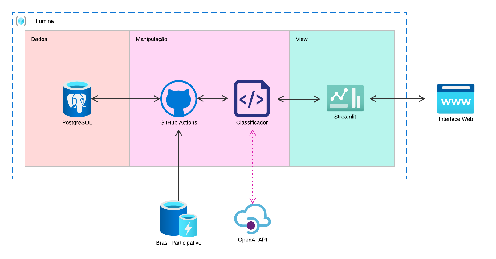

Arquitetura
Arquitetura
Para o desenvolvimento do nosso projeto, utilizaremos o framework Django como base.
Diagrama de arquitetura

Módulos arquiteturais
A arquitetura escolhida foi uma variação da arquitetura MVC (Model - View - Controller) utilizada pelo Django.
View
Aqui é onde os resultados são apresentados aos usuários finais:
-
Streamlit: Ferramenta para a construção de aplicativos web interativos em Python. Exibe visualmente os resultados da classificação de sentimentos de forma acessível e fácil de interpretar.
-
Interface Web: A conexão entre o Streamlit e os usuários finais. Proporciona um meio para que os usuários interajam com o sistema, visualizem análises e dados processados.
Manipulação
Esta seção é responsável pelo processamento e preparação dos dados para análise:
-
GitHub Actions : Uma plataforma de automação de fluxo de trabalho integrada ao GitHub, projetada para facilitar a gestão e execução de processos. No contexto do projeto, o GitHub Actions é responsável por orquestrar o fluxo de dados de forma eficiente. Utilizando arquivos YAML para definir workflows, ele realiza etapas como a extração de informações do banco de dados, aplicação de transformações nos dados brutos e preparação para a etapa de classificação, assegurando que estejam no formato esperado pelo Classificador.
-
Classificador: O núcleo do sistema de análise de sentimentos. Utiliza engenharia de prompt para LLM's para categorizar e atribuir sentimentos (positivo, negativo, neutro) aos dados processados. É integrado com a OpenAI API para utilizar modelos de linguagem na execução da análise de sentimento.
Dados
Nessa seção, encontramos as fontes de dados primárias:
-
PostgreSQL: Banco de dados PostgreSQL. É responsável por armazenar os dados brutos que serão utilizados no processo de análise junto com todos os dados que já foram analisados.
-
Site do Brasil Participativo: Fonte dos dados brutos com todos os comentários e propostas do Brasil Participativo.
Tabela de Versionamento
| Versão | Data | Descrição | Autor(es) |
|---|---|---|---|
| 1.0 | 01/12/2024 | Criação inicial | Caio Pacheco |
| 2.0 | 10/12/2024 | Arquitetura de 3 modulos | Caio Pacheco |
| 3.0 | 15/12/2024 | Alteração da Arquitetura | Luiz Soares |